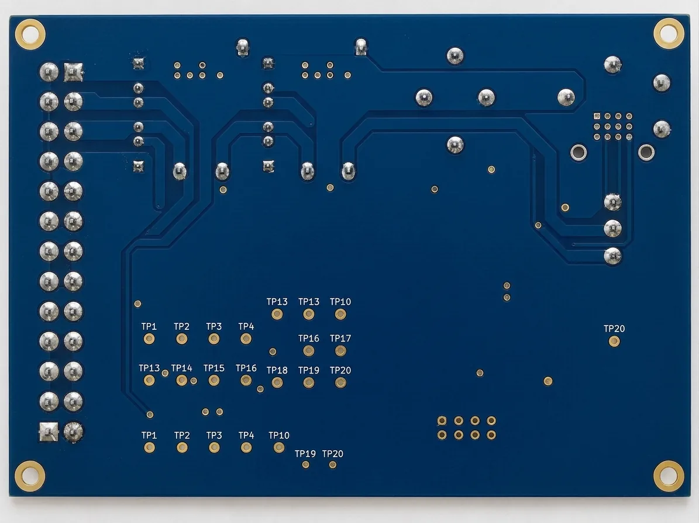
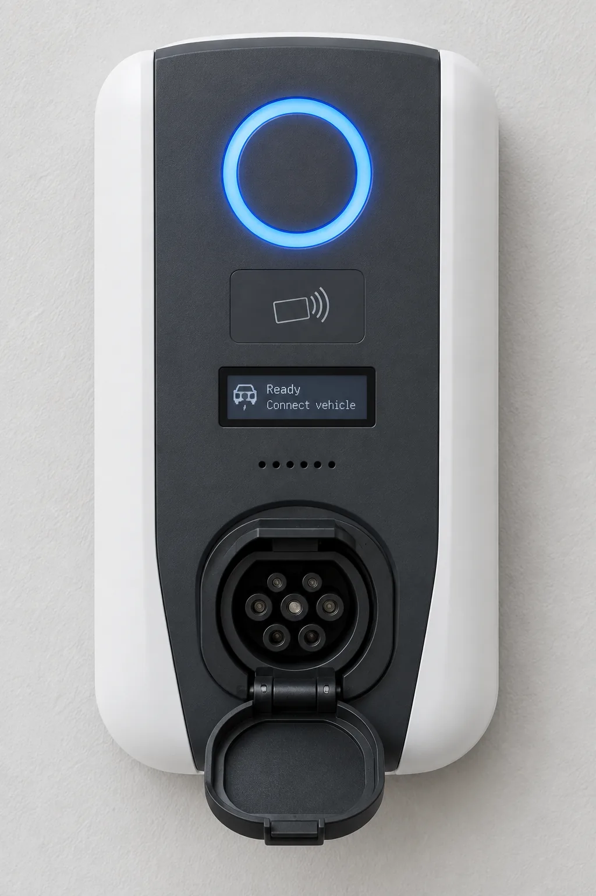
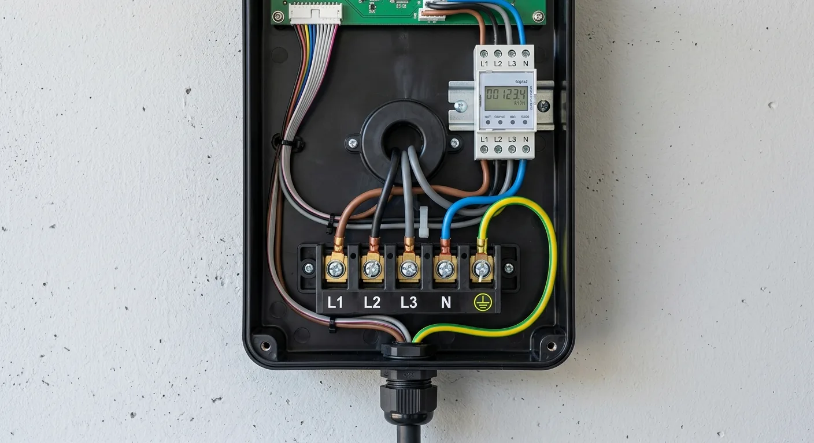

Una specifica di test che è anche il programma che la scrive.
DEDALO scrive specifiche di collaudo di fine linea per dispositivi elettronici in un unico file HTML autosufficiente: il file è insieme l'applicazione e il documento.
Chi lo riceve lo apre con un doppio click — niente da installare, nessuna rete — lo legge, lo naviga, lo modifica e lo stampa in PDF.
Un tour di tre minuti e mezzo dell'editor.
L'interfaccia, l'intestazione, una variabile globale, una fase di setup, una fase con un passo e un criterio di accettazione legato alla variabile, la duplicazione di un passo, una variante di prodotto cambiata dal vivo sul documento stampato, validazione e salvataggio.
Niente installazione, niente account, niente server.
Save — il 💾 nella barra dei comandi — ricostruisce l'intero file con i dati correnti e lo scarica. Il file scaricato sostituisce l'originale e può essere a sua volta aperto e modificato. Non serve altro da nessuna delle due parti.
Al salvataggio vengono sostituiti solo questi tre blocchi: il file resta in memoria esattamente come è stato aperto, e l'intera interfaccia viene costruita a runtime.
Un file che è, parola per parola, l'ultima revisione emessa — il file così come viene consegnato — si apre direttamente in modalità lettura, dove nulla porta all'editor. Esc riporta all'editor.
Il lavoro non salvato viene copiato nello storage del browser ogni pochi secondi e riofferto dopo un crash o una finestra chiusa per sbaglio. Il file su disco cambia solo quando lo scarichi, non prima, e la barra di stato dice quale dei due stai guardando.
Ctrl+S salva, Ctrl+Z / Ctrl+Y annullano e ripetono.
Fasi, passi, punti, criteri — ognuno raggiungibile con il suo codice.
I passi rimandano ai cataloghi tramite un codice, e ogni riferimento porta sia il codice sia il nome di ciò a cui punta.
I valori mostrati da qui in poi vengono dalla specifica di esempio — un prodotto inventato, descritto per intero più sotto.
Nel documento stampato i passi restano brevi e rimandano alle appendici tramite i loro codici. Sullo schermo, fermare il puntatore su un codice ne mostra un'anteprima; un click la apre di lato senza perdere il punto in cui sei, oppure apre l'elemento nell'editor.
Sulla foto è disegnato solo il numero del punto, così i marker restano piccoli; il nome completo è a un hover o un click di distanza. A meno che il punto non sia un test point: quando il suo connettore ne indica uno, il marker mostra quel nome al suo posto, così il disegno parla la lingua stampata sulla scheda. Ogni marker definisce anche l'area della foto che vale la pena mostrare: aprire un punto dà prima il ritaglio.
I limiti numerici usano l'intero set di confronto di TestStand, con gli stessi nomi che usa TestStand — inclusi i tipi che passano fuori dai limiti, e NONE, che registra un valore e non giudica nulla. Un limite può leggere una variabile globale invece di un numero; un nominale senza tolleranza è un errore, non un numero nudo.
| PP RESISTOR APPLY · RES-13 [Ω] |
CABLE CAPABILITY GET · CMD-05 [A] |
EFFECTIVE LIMIT GET · CMD-06 [A] |
|---|---|---|
| 1500 | 13 | 13 |
| 680 | 20 | 20 |
| 220 | 32 | $MaxCurrent |
Quando la stessa lettura viene presa per un elenco di combinazioni, il passo è una tabella sola: le colonne dicono cosa viene applicato e cosa viene letto, con quale strumento o comando e in quale unità; le righe dicono le combinazioni, un criterio per cella, scritto come lo scrive la specifica. Si stampa come una tabella sola, sul foglio e nel file Word.
Un documento base. Le varianti sono un livello sopra — nulla viene duplicato.
Una variante è un insieme di operazioni sul documento base: si può aggiungere, cambiare o rimuovere qualunque cosa. La matrice copre i casi frequenti; per tutto il resto scegli la variante nella barra in alto e modifichi il documento — ogni modifica diventa una personalizzazione di quella variante, marcata con un bordo arancione e annullabile con ↺.
I codici non cambiano sotto una variante: una fase mantiene il codice che ha nel documento base, e un salto nella numerazione è il modo in cui il documento dice che qui quella fase non viene eseguita.
Si lavora su una bozza. Validate congela un'istantanea immutabile — numero, data, autore, motivo, stato — e porta la bozza al numero successivo. La cronologia resta dentro il file, compressa, e alimenta il registro delle modifiche e il confronto tra due versioni, che produce le differenze raggruppate per capitolo.
L'ultima appendice del documento stampato: una colonna per ogni revisione che ha cambiato qualcosa, una riga per ogni cosa cambiata, ogni cella dice cosa quella revisione le ha fatto — aggiunta, cambiata da cosa a cosa, rimossa, spostata — colorata per tipo. Un testo lungo viene contato invece che citato.
Due revisioni si consolidano in una: la revisione scelta lascia il registro e ciò che ha cambiato appartiene alla revisione successiva. Il modello è a editor singolo — chi modifica emette la revisione e ridistribuisce il file; aprire un file con meno revisioni emesse avvisa.
Una specifica esistente, convertita con l'aiuto di un modello linguistico.
Le vecchie specifiche esistono di solito come PDF. IMPORT-GUIDE.md è scritta per essere data in mano a un modello insieme al documento sorgente: spiega il modello di una specifica, dà il formato JSON esatto e le regole per leggere un testo esistente — cosa diventa uno stimolo e cosa una misura, quando un blocco ripetuto è una fase di setup, quando un valore merita una variabile, e soprattutto a non inventare ciò che il sorgente non dice.
Il modello restituisce uno spec.json; Import data… lo carica ed elenca ciò che non è riuscito a risolvere. La stessa guida fa anche da documentazione concettuale di DEDALO, e l'importazione accetta anche un file Export data precedente, quindi il JSON è un formato che va e torna.
Ciò che la conversione ha da dire accanto al documento non entra nel documento: arriva come note a margine, con il loro file offerto dal rapporto. Le immagini non possono viaggiare nel JSON — vanno caricate dopo e i marker posizionati.
Lo stesso documento, la stessa densità, su carta e in Word.
Stili di titolo, così il riquadro di navigazione funziona e il sommario si compila da solo con Ctrl+A, F9; tabelle con righe di intestazione ripetute; impaginazione A4; un'intestazione fissa con azienda e prodotto e un piè di pagina con codice documento, revisione, riservatezza e «Page X of Y».
Un .docx è uno ZIP di parti XML, quindi viene scritto qui direttamente — niente da scaricare, il file resta autosufficiente. Word non sa disegnare i marker sopra una foto, così il browser disegna prima ogni figura su un canvas — immagine più marker, e il grafo delle fasi — e incorpora i PNG risultanti.
Una specifica si legge al banco. Solo la copertina, il capitolo delle fasi e le appendici iniziano su una pagina nuova; i vincoli tra fasi sono una riga invece di una tabella; la tabella dei passi tiene tre colonne. Lo stesso contenuto che occupava 15 pagine ora ne occupa 10.
EVC-22 — la specifica di un prodotto che non esiste.



Lato componenti, lato saldature, pannello frontale, vano cablaggi — 41 punti di contatto distribuiti su di esse, ciascuno con i suoi marker e il suo ritaglio.